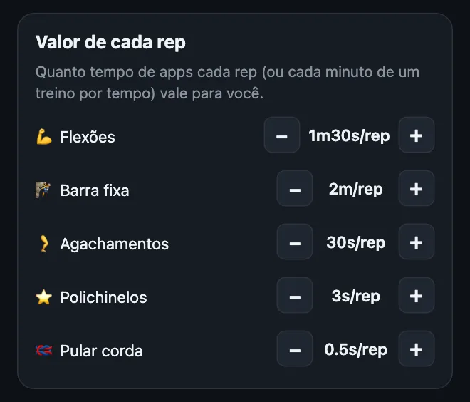

Quanto tempo de tela uma flexão deveria valer?
Oi, gente! No HonorFit, cada rep que você registra compra tempo de apps, e quem decide o preço é você. Essa é a pergunta que eu mais recebo depois que as pessoas configuram o app: quanto uma flexão deveria valer? Um minuto? Dez segundos? Vou contar como eu penso nisso.
Os valores padrão
Se você não mexer em nada, é isto que você tem:
| Exercício | Vale por padrão |
|---|---|
| 💪 Flexões | 1 minuto por rep |
| 🧗 Barra fixa | 1m30s por rep |
| 🔥 Abdominais, 🦵 Agachamentos | 30 segundos por rep |
| Qualquer exercício que você adicionar | 30 segundos por rep |
| Treinos por tempo (caminhada, ioga, HIIT) | 30 segundos por minuto |
| Treinos por distância | 5 minutos por km, ou 8 por milha |
| 👟 Passos | 3 minutos a cada 1.000 passos |
Ou seja, 20 flexões são 20 minutos de Instagram. Para muita gente, isso é mais ou menos o certo para começar. Para outros, é generoso demais ou pão-duro demais. Qual é o seu caso?
Um jeito de escolher em uma linha
Pense em dois números:
- Quanto tempo nos seus apps bloqueados parece ok num dia normal? Seja sincero, não idealista.
- Quantas reps você faria de verdade por esse tempo, espalhadas ao longo do dia?
Depois divida: valor por rep = tempo ÷ reps. Quer uma hora de TikTok por 60 flexões? 1 minuto por rep. Quer essa mesma hora, mas você topa fazer 120 agachamentos? 30 segundos por agachamento. É basicamente isso.
Se a resposta para o número 2 for “não muitas”, tudo bem também. Dê um preço alto para as reps e use uma base diária (Ajustes, grátis) para começar todo dia com algum tempo já guardado.
Algumas configurações para copiar
| Exercício | Cada rep vale | O que uma série rende |
|---|---|---|
| Flexões (iniciante) | 1m30s | 10 flexões = 15 minutos |
| Flexões (você já faz isso há um tempo) | 30 segundos | 40 flexões = 20 minutos |
| Polichinelos | 3 segundos | 100 polichinelos = 5 minutos |
| Pular corda (por pulo) | 0,5 segundo | 600 pulos = 5 minutos |
| Barra fixa | 2 minutos | 5 barras = 10 minutos |
| Corrida (distância) | 6 minutos por km | uma corrida de 5 km = 30 minutos |
A lógica: quanto mais fácil e rápida for a rep, menos ela deveria valer. Um polichinelo leva mais ou menos um segundo, então não deveria comprar o mesmo que uma barra.
Os botões −/+ ficaram mais precisos na 1.18.0
Até pouco tempo atrás, o menor valor era 5 segundos, o que deixava estranho dar preço a reps superrápidas (pular corda, polichinelos), e ir de 3 minutos para 10 minutos demorava uma eternidade. Um usuário mandou e-mail sobre as duas coisas, então na 1.18.0 os botões −/+ seguem uma escada mais esperta:
- Abaixo de 5 segundos: 4, 3, 2 e 1 segundo, depois 0,5, 0,25 e 0,1 segundo.
- De 5 segundos a 1 minuto: passos de 5 segundos.
- De 1 a 3 minutos: passos de 15 segundos.
- De 3 a 10 minutos: passos de 30 segundos.
- Acima de 10 minutos: passos de 1 minuto.
Eles ficam em dois lugares:
- Ajustes → Valor de cada rep: uma linha de −/+ por exercício. O mais rápido se você só quer ajustar um preço.
- Ajustes → Exercícios → Editar: o editor completo, onde você também adiciona, renomeia e remove exercícios e troca entre reps, minutos e distância. O passo a passo completo está em como personalizar seus exercícios.

Sinais de que o preço está errado
- Você se pega registrando reps que não fez. Seu tempo está caro demais. É o sistema de honra te dizendo alguma coisa. Suba os valores um passo de cada vez até a vontade passar.
- Seu saldo nunca acaba. Seu tempo está barato demais. Abaixe os valores um ou dois passos, ou bloqueie mais um app.
- Você faz suas reps e fica com raiva. Provavelmente o problema é o exercício, não o preço. Troque por algo que você não odeie. Uma caminhada conta. Movimentos mais leves também.
- Você acumula horas e torra tudo à noite. Ative Zerar à meia-noite (grátis) para o tempo não usado não ficar acumulando.
Dê uma semana mais ou menos para qualquer configuração nova antes de mudar de novo. Os primeiros dias são estranhos de qualquer jeito.
Modo difícil e modo doente
Para os dias que não combinam com a sua configuração de sempre, existe um botão 💀 Difícil que você pode colocar no topo da tela inicial (Ajustes → Modo difícil e doente, grátis). Toque uma vez e cada rep vale metade. Toque de novo para o 🤒 modo doente, em que cada rep vale o dobro, para quando você não estiver bem. Toque mais uma vez para voltar ao normal. Seus valores de verdade nunca mudam, então não tem nada para desfazer.
Não sou treinador: eu faço o app, não sou personal. Se um exercício doer, pare, e se você tem alguma lesão ou problema de saúde, pergunte a alguém que conheça o seu corpo o que é certo para você. Depois configure o HonorFit em cima disso.
HonorFit Blocker é um bloqueador de apps grátis para iPhone e Android. Você escolhe os exercícios e quanto eles valem. Sistema de honra, sem câmera, nada sai do seu celular.